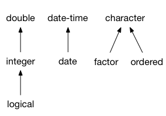

| faq-compatibility-types {vctrs} | R Documentation |
FAQ - How is the compatibility of vector types decided?
Description
Two vectors are compatible when you can safely:
Combine them into one larger vector.
Assign values from one of the vectors into the other vector.
Examples of compatible types are integer and double vectors. On the other hand, integer and character vectors are not compatible.
Common type of multiple vectors
There are two possible outcomes when multiple vectors of different types are combined into a larger vector:
An incompatible type error is thrown because some of the types are not compatible:
df1 <- data.frame(x = 1:3) df2 <- data.frame(x = "foo") dplyr::bind_rows(df1, df2) #> Error in `dplyr::bind_rows()`: #> ! Can't combine `..1$x` <integer> and `..2$x` <character>.
The vectors are combined into a vector that has the common type of all inputs. In this example, the common type of integer and logical is integer:
df1 <- data.frame(x = 1:3) df2 <- data.frame(x = FALSE) dplyr::bind_rows(df1, df2) #> x #> 1 1 #> 2 2 #> 3 3 #> 4 0
In general, the common type is the richer type, in other words the type that can represent the most values. Logical vectors are at the bottom of the hierarchy of numeric types because they can only represent two values (not counting missing values). Then come integer vectors, and then doubles. Here is the vctrs type hierarchy for the fundamental vectors:

Type conversion and lossy cast errors
Type compatibility does not necessarily mean that you can convert one type to the other type. That’s because one of the types might support a larger set of possible values. For instance, integer and double vectors are compatible, but double vectors can’t be converted to integer if they contain fractional values.
When vctrs can’t convert a vector because the target type is not as rich as the source type, it throws a lossy cast error. Assigning a fractional number to an integer vector is a typical example of a lossy cast error:
int_vector <- 1:3 vec_assign(int_vector, 2, 0.001) #> Error in `vec_assign()`: #> ! Can't convert from <double> to <integer> due to loss of precision. #> * Locations: 1
How to make two vector classes compatible?
If you encounter two vector types that you think should be compatible, they might need to implement coercion methods. Reach out to the author(s) of the classes and ask them if it makes sense for their classes to be compatible.
These developer FAQ items provide guides for implementing coercion methods:
For an example of implementing coercion methods for simple vectors, see
?howto-faq-coercion.For an example of implementing coercion methods for data frame subclasses, see
?howto-faq-coercion-data-frame.